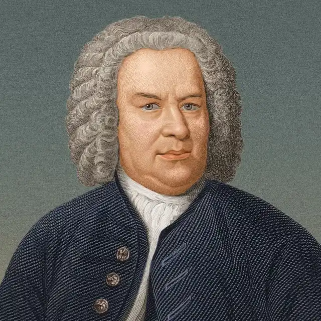

文章列表

大部分的小提琴學生接觸巴哈的作品都是從無伴奏小提琴組曲開始，這套組曲分為三首奏鳴曲與三首組曲，每一首基本上包含四到六個樂章，一般建議至少學琴幾年，有中等以上的程度再去學習，為什麼？因為用小提琴演奏巴哈真的很不容易。
巴哈無伴奏是很重要的曲目，這是提琴演奏圈公認的事實。他的教育價值在於，作品的音樂性與深度，可以給予學習者一個很長期的訓練與進步空間，而他的歷史定位，在小提琴少有的無伴奏作品中，也是屬一屬二的。但如果仔細觀察，會發現實際音樂會上巴哈無伴奏並不是那麼常見，我們更常在考試與面試的場合見到這些作品。雖然說無伴奏在效果上不容易與交響樂，協奏曲等大型規模的編制相比，但是更少人選擇它們的原因，很可能是這些原因：
＊＊音準控制的不易
無伴奏顧名思義，就是沒有其他的樂器支援伴奏，也就是說，小提琴必須自己提供如同伴奏的效果。那就會產生一個關鍵的難點：立體層面的音準考量，也就是除了橫向持續進行的旋律，要考慮音準關係之外，縱向的音準，也就是兩個聲部以上音準的關係也要注意。因此演奏巴哈時，音準是特別需要注意的議題。
＊＊為了對比，音色調和的運弓需求
巴哈處於巴洛克時期，而這個時期音樂的特質，是強調對比與呈現色彩，在上面有旋律的同時，底下也同時存在低聲部的聲線。這些特色會需要音樂家在演奏時，為了創造兩種以上的聲音特質，利用弓速變化，音符的時長或是音量對比來實現。也就是説演奏巴哈要有更精密的音色要求，而小提琴在音色上卻是比較容易出狀況的樂器。
＊＊瑕疵的高度透明
在與其他樂器一起演奏時，節奏與音準會一起創造，演奏的情況共享，對於演奏的失誤與瑕疵也會分擔，有“互相照顧“的效果，而演奏無伴奏的作品時，則會將所有的結果放大並聚焦在個人身上，因此對於各種微小的瑕疵都會非常的明顯。
結論
巴哈的無伴奏作品是學習小提琴的里程碑之一，雖然難度高，也不容易演奏的好聽，但是可以在這些作品上學到很多技巧上與音樂上的細節，建議把它當作一個理解與學習音樂的重要夥伴，或是一個嚴厲的老師這樣的角色。
回上一頁